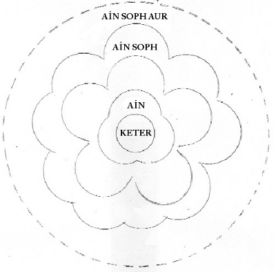

İçerde ev halkından kimse yoktu’
[Genesis-Tekvin 39:11]
‘Böyle bir gün’
Günah Düzenleyicisinin dünyada rahatça dolaştığı o gün,
Yanlıştaki insanlara yol göstermek için geldi.
O gün ne zamandır?
Aynı gün bir kişi günahlarını anladı
Ve (pişmanlıkla) kendi çevresinde dönmeye başladı,
Veya o zaman Tevrat çalışmaya veya onun emirlerini çözmeye başladı.
Işte o anda o(erkek) yoldan çıkmış insana yol göstermek için iner.
‘O(erkek) işini yapmak için eve geldi,’
Tevrat çalışmak ve O(Tevrat)nun emirlerini çözmek için,
Bu yüzden, Bir kişinin bu dünyada yapacağı iş’dir.
Şimdi bir kişinin bu dünyada yapacağı gerçek iş,
Kutsanmış Kutsal Bir’in işidir,
O tam bir aslan gibi güçlü olmalıdır
Bu yüzden öte yandaki ondan daha güçlü olmayacak
Veya onu ayartamayacaktır.
Ne yazıldı?
‘orada kimse yoktu,’
ayağa kalkıp, Günah Düzenleyicisiyle
savaşacak kimse yoktu.
Günah Düzenleyici nasıl çalışır?
Önce önünde kendisiyle savaşacak kimse olmadığını görür,
Hemen o(kadın), o(erkek)in ceketinden tutar ve “Benimle yat!” der.’
[Genesis-Tekvin 39:12]
O(kadın) O(erkek)in ceketinden tutar
Çünkü Günah Düzenleyici, kişinin denetimini ele geçirdiğinde
O(kadın)na güzel elbiseler giydirir.
Ve saçlarını bukle yapar
Ve ‘yat benimle! Katıl bana!’ der.
Oysa Kendisi saf çelikten olan biri (gibi) savaştı.
Ne yazılmıştı?
‘fakat o ceketini onun ellerine bıraktı ve odanın dışına kaçtı.’
Onu terketmeliydi, ona karşı kendini sertleştirmeliydi,
kendini güvene almak için ondan kaçmalıydı.
O zaman (Günah Düzenleyici) onun kontrolunu alamadı.”
Rabbi İshak dedi
“Doğru yolda olanlar, Günah Düzenleyiciyi,
dev bir dağ şeklinde görmeyi isterler.
Sonra da şaşırıp, şöyle derler:
‘O dev dağı nasıl da devirdik?’
kötü ruhlu olanlar ise
saç telinden daha ince görmek isterler,
sonra da şaşırıp şöyle derler:
‘o kadar ince saçların geçirilmesini nasıl beceremedik?’
Bunlar da, onlar da ağlayacaklar.
Kutsanmış Kutsal Bir, Günah Düzenleyiciyi yeryüzünden süpürüp atacak
Ve onun gücünün daha çok artmasına fırsat vermeden
önce gözlerini mahvedecek.
Bunu görünce, doğru yolda olanlar sevinçten uçacak,
şöyle diyecekler:
‘Mutlaka doğrular Senin Adına dua edecekler;
Senin Huzurunda dimdik duracaklar’”
[Mezmurlar/Zebur-Psalms 140:14}
O Günler, Yakub’un elbisesi
İsrail’in günlerinde, ölümün kenarına sürükleniyorlardı
O oğlu Yusuf’u yanına çağırdı ve ona dedi,
“Eğer benden râzı kaldıysan, lütfen elini uyluğumun altına koy;
bana karşı kalbindeki sevgiyle davranarak: lütfen beni Mısır’da gömme.
Ben babalarımın yanında yatmak isterim;
Bu yüzden beni Mısır‘dan gönder ve beni onların yattığı yere göm.
[Genesis-Yaratılış 47:29-30]
Rabbi Yudah açtı ve dedi
“‘Dinleyin, siz sağırlar!
Siz körler, bakın ve görün!’
[İşaya 42:18]
‘Dinleyin, siz sağırlar!’
Tevrat’ın konuşmasını duymayan,
Üstâdınızın emirleri için kulaklarını açmayan siz insanlar.
‘Siz körler!’
kendi köklerini gözden geçirmeyen,
nasıl diri olduklarını bilmek için araştırmayanlar!
Her bir gün bir haberci gelir ve ilân eder
Ama hiçkimse onun mesajını duymaz!
Şu öğrenilmişti ki;:
İnsanoğlu yaratıldığında,
Dünyaya geldiği zaman,
Eşzamanlı olarak, onun bütün yaşamı da yukarıda düzenlenmişti.
Insanoğlunu gün gün uyarmak için,
Onlar, (Üstadlar) birer birer aşağı dünyaya uçarlar.
Eğer, birisi o günki günahlarından önce
kendi üstâdının uyarısına uyarsa,
o gün utancından sıyrılır,
(sadece) tanıklık eder ve dış tarafta yalnız kalır.
Şu öğrenilmişti ki;:
Yalnız kaldıktan sonra
O insan, oturur ve günü yeniden canlandırmak için,
üstâdının dönmesini bekler,
eğer başarılı olabilirse, o gün oraya geri döner;
başaramazsa, o gün, yasadışı ruhlara katılmak üzere aşağı düşer.
Onun içindeki kendi biçimi, tam olarak o insanın görüntüsüdür
Ve içinde hareket ederek ona işkence eder.
Eğer birisi kendisini arındırırsa
Bazan o iyilik için kalabilir
Eğer öyle değilse, korkunç ziyaretlerle karşılaşabilir.
Her iki şekilde de, böyle günler, bütünlüğü olmayan, kayıp günlerdir.
Kim ki Kutsal Kral’ın huzurundaki günleri azalmıştır,
Kim yukarısı için günlerini ayıramazsa—
Yazık ona,
Kim dünyanın günlerini süsleyebilirse,
O, Kutsal Kral’ın huzurunda olmayı başlatabilir.
Gel ve gör:
O günlerde, Kutsal Kral’a yaklaşan,
arınmış bir şekilde dünyayı bırakan,
yükselir ve o günlere girer
ve ruh giysisi ışımalarla dolar!
Ama bu sadece erdemli günleri içindir,
yanlışta olduğu günleri için değil.
Yukarıda günleri azalana ne yazık!
O günler için giyinmiş olan
O günler, yitirilmekten mahvolmuştur,
ve giydikleri lime lime olmuştur
orada böyle günleri çoksa daha da kötü olur;
Sonra o dünyada giyecek hiçbirşeyi de kalmaz!
Yazık ona, yazık onun ruhuna!
O günler için o, cehennemde cezalandırılır,
günler üstüne günler,
boşa harcanmış her gün için iki gün olmak üzere!
bu dünyayı bıraktığı için, giyinmek için gün bulamaz,
örtünmek için bile hiçbir giysisi olmaz.
Ne mutlu doğru yolda olanlara!
onların bütün günleri Kutsal Kral’ın yanında korunmaktadır.
onlar, ışımayla dokunmuş giysilerle dünyaya gelmişlerdir.
Biz Mişna’mızın gizlerini öğrendik:
Niçin yazıldığını:
‘Ve onlar kendilerinin çıplak olduklarını anladılar’
[Başlangıç-Tekvin 3:7]
Adem ve Havva çıplak gerçeği bildiler:
ışıkla dokunmuş giysileri günden güne yok oluyordu.
tamamen yok olmasına bir tek gün kalmıştı,
şöyle yazılmıştır:
‘gözlerin beni gördüğünde, kollarım oluşmamıştı daha;
Kitabında bunlar yazılıdır.
‘O biçimlenme günlerinde -
daha hiçbiri (organlar) yoktu’
[Mezmurlar/Zebur-Psalms 139:16].
Aynen!
O biçimlenme günlerinde hiçbiri yıpranmamıştı daha.
Ve bu yüzden öylece kaldı
tâ ki Adem’in yolunu düzeltmek için Tanrı’ya geri dönme çabasına kadar.
Kutsanmış Kutsal bir onu kabul etti
Ve ona farklı bir giysi yaptı ama ilki gibi değil,
Şöyle yazılmıştır:
‘YHVH Elohim, Adem ve karısı için deriden giysiler yaptı
ve onları giydirdi’
[Genesis-Başlangıç-Tekvin 3:21]
Gel ve gör:
Abram, saf’dı, ona ne yazılmıştı?
‘O yaşlılık günlerine girmişti’
[Genesis-Başlangıç-Tekvin 24:1]
bu dünyadan ayrıldığında,
kendi çok özel günlerine girmiş ve giyinmişti.
ama o ışıltılı giysiyi özlüyordu:
‘O günlere girmişti.’
Ama Eyub için ne yazılmıştı?
‘O dedi, “Anamın rahminden çıplak geldim
ve oraya çıplak döneceğim”
[Eyub-Job 1:21]
Ona giymesi için hiç giysi bırakmadı.
Onların geldikleri dünyadaki gibi
saf günleri devam ettiği için
doğru yolda mutlu olmayı öğrendiler.
Bu dünyayı bıraktıklarında,
bütün günleri birlikte dikildi,
giyinmeleri için ışıltılı giysiler yapıldı.
O giysileri giydiler,
ancak o zaman geldikleri dünyada
zevk aldılar ve mutlu oldular.
Onları giydikleri zaman,
yaşama geri dönme arzuları gerçekleşir.
Giysilere sahip olduklarında,
yaşama geri dönecekler.
Şöyle yazılmıştır:
‘Onlar, giysiler gibi yükselecekler’
[Eyub-Job 38:14]
Vah! dünyanın kötü ruhlularına,
ki günleri hatalar ve kötülüklerle doludur!
dünyayı terkettikleri zaman onların barınacakları yer yoktur.
Bütün doğru yolda olanlara öğretilmiştir:
o günlerin ışıltılı giysisini giyenler ayrıcalıklıdır
onlar, Atalarının emekleri ile taçlanmışlardır,
Cennet bahçesinden fışkırarak akanlarla da.
Şöyle yazılmıştır:
‘YHVH sana her zaman yol gösterecek
parlayan ışıklarla ruhunu hoşnut edecek’
[İşaya 58:11]
fakat dünyanın kötü ruhluları,
o günlerin giysilerini giymeye layık değillerdir,
onlar için şöyle yazılmıştır:
‘İyilik geldiğinde görmeyenler,
çöldeki çalı gibi olacaklar,
ıssız yerlerde kavrulacaklar’
[Yeremya 17:6]
Rabbi İshak dedi:
“Mutluluk Yakub’un yazgısıydı!
o böyle bir inanca sahipti ki şöyle dedi:
‘Ben babamla yatacağım.’
O, o dereceye erişmişti, daha aşağısına değil!
diğerlerini geçmiş, geride bırakmıştı, kendisi de onların günlerindeki gibi giyinmişti!”
Zohar çıkış bölümü
Musa’nın doğumu
Levi evinden bir adam,
gitti ve bir Levi kızı ile evlendi.
Kadın hâmile kaldı ve bir erkek çocuk doğurdu;
onun ne kadar güzel olduğunu gördü ve onu üç ay sakladı.
[Çıkış-Exodus 2:1-2]
“Bir adam” Gabriel’dir (Cebrail),
dediği gibi:
“Düşümde gördüğüm adam Gabriel (Cebrail)...”
[Daniel 9:21]
“Levi Evi” sol taraftan çıkan
İsrail Toplumudur.
“Levi kızı ile evlendi”, kutsal ruh’a işaret eder,
öğrendiğimize göre:
Doğruyoldaki kahramanın bedeni bu dünyaya doğduğunda
Kutsanmış Kutsal Bir, Cennetten kutsal ruh taşıyan
Gabriel’i çağırdı
ve onu (kadın) bedenine yerleştirdi, dünyaya doğurdu.
Gabriel, kutsal ruh’un koruyucusu olarak bilinir...
“Bir adam” Amram’dır.
“Levi kızıyla evlendi” Yocheved’e işaret eder.
Kızın sesi, kutsal yansımadır,
indi ve onunla (kadınla) bir olacağını,
zamanı geldiğinde ve olgunlaştığında
İsrail için bir erkek çocuk doğuracağını, söyledi.
Kutsanmış Kutsal Bir Amram’a yardımcı oldu,
öğrendiğimize göre:
Şekinah
onların yatağındaydı
ve onların arzusu O’na (kadına) katılmaktı.
Bu yüzden Şekinah onların meydana getirdiği
erkek çocuğunu asla bırakmaz,
ne yazılmışsa onaylanmıştır:
“Kendinizi kutsayın ve kutsal olacaksınız”
[Levililer-Leviticus 11:44]
İnsanoğlu kendisini aşağıda kutsarsa
Kutsanmış Kutsal Bir tarafından yukarda da kutsanır.
Onlar Şekinah’a katılmaya odaklanmışlardır;
Bu yüzden onlar ne kadar çok uğraşırlarsa,
Şekinah’a o kadar çok katılırlar.
Rabbi İshak dedi:
“Doğru yolda olanlar mutludur!
onların arzusu, sürekli olarak Kutsanmış Kutsal Bir’le birleşmeye odaklanmıştır
herzaman O’na sadıktırlar,
bu yüzden O da onlara sadıktır, onları asla bırakmaz.
Vay kötülere!
onların arzuları ve bağlılıkları O’ndan uzak ve ayrı kalmaktır.
sadece kendilerini O’ndan uzaklaştırmakla kalmazlar;
Diğer Yana bağlı kalırlar!
Amram Kutsanmış Kutsal Bir’e sadık kaldı
ve Musa onun önüne geldi.
Musa!
Kutsanmış Kutsal Bir, asla ondan ayrılmadı.
Şekinah daima onunla oldu.
Onun payına düşen mutluluktur.
Kadın tasarladı ve bir erkek çocuk doğurdu;
onun ne kadar güzel olduğunu gördü...”
Bu adam ne yaptı: “o ne kadar güzeldi”?
Rabbi Hiya dedi
“onun anlamı şudur, o sünnetli doğdu,
onun için gizli antlaşmada “güzel” diye adlandırıldı
bu yüzden şöyle yazılmıştır:
“doğru yolda olan birine o güzeldir deyiniz’
[İşaya 3:10]
Rabbi Yose dedi;
“O (kadın) Şekinah’ın ışımalarının onun üstünde parladığını gördü,
onun için o doğduğunda evin heryeri ışıkla dolmuştu!
Ayet şöyledir: “O(kadın) onun ne kadar güzel olduğunu gördü!;
bir diğer ayette: “Tanrı ışığın ne kadar iyi olduğunu gördü”
[Genesis 1:4]
“O(kadın) onu üç ay sakladı.”
“üç ay” bunun önemi nedir?
Rabbi Yuda dedi:
“sırrı îma eder:
Musa’nın aydınlanması ‘üç ay’ dan önce anlaşılamadı.
şöyle yazılmıştır:
‘İsrail oğulları, Mısır diyarından çıkışlarından üç ay sonra
o gün, Sina çölüne girdiler’
[Exodus-Çıkış 19:1].
Tevrat sadece onun tarafından yayılmıştı;
Şekinah Onun (kadın) kendisinde açığa çıktı ve hepsinin gözünden önce
onun (erkek) üstünde dinlendi,
şöyle yazılmıştır:
‘Musa Elohim’e gitti ve YHVH onu çağırdı’
[Exodus-Çıkış 19:3].”
Musa ve alevlenen çalı
Musa, Midyan kâhini olan kayınpederi Jetro’nun sürülerini otlatıyordu.
sürüyü kimsenin bulunmadığı çok uzaklara götürdü
ve Elohim’in dağı olan Horev dağına geldi.
YHVH’in meleği bir çalıdan yükselen alev olarak ona göründü.
Ona dikkatle baktı: alev alev yanıyor
ama çalı tükenmiyordu!
[Exodus-Çıkış 3:1-2]
“YHVH’in meleği, ateşin alevinde ona göründü.”
Diğer peygamberlerden farklı olarak, Musa’ya ateşin alevi.
Neden?
Rabbi Judah dedi ki;
“Musa diğer peygamberler gibi değildi.
Biz öğrendik ki:
Ateşe çok yaklaşan yanar.
Musa ateşe çok yaklaştı ama yanmadı,
bu yüzden şöyle yazılmıştır:
‘Musa yoğun dumana yaklaştı, Elohim oradaydı’
[Exodus-Çıkış 20:18]
Bu yüzden burada
‘YHVH’in meleği yanan çalının alevinde ona göründü.”‘
Rabbi Abba dedi ki
“Musanın doğasını, bilgeliğin ışığında keşfetmeliyiz.
Neden şöyle yazılmıştır:
‘Firavunun kızı “onu sudan çıkardım” diyerek
Onun adını Musa koydu?’
[Exodus 2:10]
Sudan çıkarılan biri ateşten korkmaz.
Ve Rabbi Judah adına öğretilmişti ki:
‘Musa yerden kesilmişti, başka hiç kimse yerden kesilmemişti.”
Rabbi Yohanan dedi
“Musa, on kürenin hepsini dizmişti,
şöyle yazılmıştır:
‘Benim evimde O (Musa) güvenilir biridir’
[Sayılar-Numbers 12:7]
Evimin tam olarak bir üyesi değildir
ama (ona) herşey emanet edilmiştir!
bu Efendinin onayıyla,
insanoğluna mutluluk verilmiştir!”
Rav Dimi açıkca konuştu:
“Fakat şöyle yazılmıştı:
‘İsrailde asla Musa gibi bir peygamber meydana çıkmadı’
[Deuterenomy - Tesniye 34:10]
ve Levi oğlu Rabbi Joshua bunu şu anlamda yorumladı:
İsrailde değil ama, dünya ulusları arasında bir tane çıktı!
Kimdi o? Balaam
.
“Gerçekten, haklısınız” dedi Rabbi Yohanan
ve sustu.
Yohai’nin oğlu Rabbi Shim’on konuşmaya girerek,
onlara bu konuyu sordu
“Kara reçine mükemmel bir pelesenk’le
karışırmı?
Tanrı yasaklar!
Gerçekten, bu hakîki anlamıdır:
dünya ulusları arasında biri çıktı.
kimdi o? Balaam.
Musa’nın eylemleri yüceydi; Balaam’ınkiler ise alçak.
Musa, yukarıda en üstün Kral’ın kutsal taç’ı ile uğraşıyordu;
Balaam ise aşağıda, kutsal olmayan, aşağı taçların kara büyüleri ile.
Bu yüzden
‘İsrailliler, Beor’un oğlu büyücü Balaam’ı da kılıçla öldürdüler”
[Yeşu 13:22]
En yükseklerdeki birinin gidip bir eşeğe akıl danışacağını düşünebilirmisiniz!
Rabbi Yose geldi ve onun elini öptü;
dedi ki,”
“Ah! Şimdi burada yüce ve alçak, sağ ve sol,
merhamet ve yargı, İsrail ve putperestleri, görünce,
Kalbimin ortadan kaybolmasını istiyorum!
İsrail, yüce ve kutsal taçları kullanır;
putperestler ise, aşağılık ve kutsal olmayanları.
İsrail sağdadır, putperestler solda.
yüksek peygamberler ve alçak peygamberler,
kutsal peygamberler ve kutsal olmayan peygamberler
arasında ne fark vardır!”
Rabbi Yudah dedi ki
“Musa, yüksek ve kutsal peygamberler grubundandı,
Balaam ise kutsal olmayan aşağıdaki büyücüler grubundan.
her bağlamda Musa yukarıda ve Balaam aşağıdaydı.
bu yüzden bu ikisini birçok derece ayırır!”
Rabbi Yohanan, Rabbi İshak adına dedi ki
“Musa, Tanrının yasakladığı (Mısırlıların uyguladığı)
sert kölelik koşulları nedeni ile İsraillilerin
ortadan kalkacağından endişe ediyordu!
bu yüzden şöyle yazılmıştır:
‘O soydaşlarının yanına gitti ve onların sıkıntılarını gördü’
[Exodus-Çıkış 2:11]
Bu yüzden
‘YHVH’in meleği ona ateşin alevinde göründü...
O dikkatle baktı: çalı ateşte alev alev yanıyordu’.
bu İsrail’in köleliğini gösteriyor,
fakat ‘çalı tükenmiyordu!”‘
İsrail mutludur!
Kutsanmış Kutsal Bir, onları diğer uluslardan ayırmıştır
ve onları evlatlarım adıyla çağırmaktadır,
şöyle yazılmıştır:
“Siz, Tanrınız YHVH’in çocuklarısınız!”
[Deuteronomy-Tesniye-İkileme 14:1]
Musa ve kayınpederi
Musa YHVH’ a döndü.
“Efendi, bu halk’a neden kötü davrandın?
neden beni gönderdin?
Senin adınla Firavunla konuştuğumdan sonra
bu insanlara daha kötü davrandı;
Sen de buna göz yumdun!”...
Elohim Musa ile konuştı;
ona dedi ki, “Ben YHVH’ım!”
[Exodus-Çıkış 5:22-23, 6:2]
Rabbi Yose dedi ki
“Musa!
Eğer evin hâkimi, Elohim’in kocası değilse,
o söyledikleri yüzünden cezalandırılır.
(ama) o öyle olduğu için cezalandırılmadı.
O, karısına yakınmalarını sert bir dille söyleyen
bir adam gibi davrandı.
O (adam) kontrolunu kaybetmeye başlamıştır
ama sözcükler uçuşmaya başlayınca, kral ortaya çıkar ve sözcükleri yukarı çeker.
O zaman O (kadın) sessizliğe döner ve başka bir şey söylemez.
Kral ona, “Bilmiyormusun ki ben Kral’ım?
bu sözcükleri bana karşı mı söylüyorsun!”
Kahraman da, sanki olabilir gibi:
‘Musa YHVH’ya döndü.
“Efendi, bu halka neden yanlış yaptın? dedi”
Aynı anda ‘Elohim Musa ile konuştu’
Kadın kontrolunu kaybetmeye başlamıştı.
Aynı anda kral sözü yukarı çekti:
‘Ona dedi ki, “Ben YHVH’im!”
‘Bilmiyormusun ki Ben Kral’ım?
Bana karşı bu kelimeleri konuştun!’
‘Ben Abram’a, İshak’a ve Yakub’a El Shaddai (Kâdiri mutlak Tanrı) olarak göründüm’
[Exodus-Çıkış 6:3]
Bu ad neden yukardakilerden farklıdır?
Bu, henüz evlenmemiş kızı olan bir kral gibidir.
Onun aynı zamanda sevgilisi de olan bir arkadaşı vardır.
Kral, (kızın) arkadaşı ile konuşmak isterse
onunla konuşmak için kızını gönderir.
kral (kızının) arkadaşıyla kızı aracılığıyla konuşur.
kızının evleneceği zaman geldiğinde
kızının düğün günü kral,
‘benim kızımı Matronita Hanım
diye çağırın!’ der
Ve ona,
‘Şimdiye kadar başkalarıyla senin aracılığınla konuşuyordum,
Şimdiden sonra, kocanla konuşacağım
ve başkalarına verilmesi gereken mesajları o iletecek’
Bir gün kralın huzurunda kocası o kadınla sert konuştu.
kadın cevap vermeden önce, kral sözü yukarı çekti ve
‘Ben Kral değilmiyim?
Şimdiye kadar hiçkimse kızımın aracılığı olmadan benimle konuşmadı.
sana kızımı vereceğim ve seninle açıkça konuşacağım!
hiç kimseye böyle bir ayrıcalık tanımadım!” dedi.
Buna benzer şekilde Tanrı Musaya:
“‘Abram’a, İshak’a ve Yakub’a El Shaddai
boyunca göründüm,”
o kadın henüz evlenmeden benim evimdeyken.
Onlar, seninle konuştuğum gibi
benimle yüz yüze konuşamadılar.
Benim huzurumda, Benim kızımla,
bu sözcüklerle konuşmaya nasıl cesaret edersin!
“Ben Abram’a, İshak’a ve Yakub’a El Shaddai boyunca göründüm,
ama onlar, Benim adımı YHVH olarak bilmediler”‘.
Onlarla seninle konuştuğum düzeyden konuşmadım’”
Renkler ve aydınlanma
Bir gün Rabbi Shim’on oturuyordu.
Rabbi El’azar, onun oğlu ve Rabbi Abba onu dinliyorlardı.
Rabbi El’azar dedi ki
“Bu ayette yazılan:
Ben Abram’a, İshak’a ve Yakub’a göründüm...
Neden göründü?
Bu sözcük konuşulmalı.”
O cevap verdi
“El’azar, oğlum, bu yüksek sırdır!
Gel ve gör:
Bazı renkler görülebilir;
bazı renkler ise görülemezler.
Bunlar ve Onlar inancın yüksek sırlarıdır.
Fakat insanoğlu bilemez, çünkü onlar yansımazlar.
Hangisi açığa çıkarıldı? Evrensel prizmada el shaddaı, renklerin renkleri
Bunlar, görülebilirler.
Atalar gelip onlara iyice öğretene kadar
hiç kimse o renkleri görebilecek kadar yeterince saflaşmamıştı.
açığa çıkan o renkleri görünce
(işte) o zaman sözcük belirdi.
Hangileri açığa çıktı?
El Shaddai renkleri, evrensel prizmadaki renkler.
Bunlar görülebilirler.
Ama yukarıdaki renkler gizlidir ve görülemezler —
Musa’dan başka ve üstadlığa sahip olmayanlar tarafından (görülemezler).
Bu yüzden ayet şöyle biter:
‘Ama Ben onlara YHVH adımı bildirmedim.’
Yüksek renkleri onlara açıklamadım.
Atalarımızın, Bütün bu renklerin farkında olmadığını düşünebilirmisiniz?
Bu durum onlara açıklandığından, (onlar) farkındaydılar.
Şöyle yazıldı:
‘Aydınlananlar, gökyüzünün Zohar’ı gibi parlayacaklar,
ve doğru iş işleyenler
yıldızlar gibi sonsuza dek parlayacaklar’
[Daniel 12:3]
‘Aydınlananlar parlayacaklar’
Kimdir aydınlananlar?
Bilge odur ki, sözcükler ağzında değildir,
(Bilge) kendi kendine derin düşüncededir.
‘Gökyüzünün Zohar’ı gibi parlayacak’
Hangi gökyüzü?
Merkezde durmakta olan Musa’nın gökyüzü;
bu zohar onun için gizli değildir, açıklanmıştır.
gökyüzünün üstündekiler görülebilen renkler gibi parlamazlar,
Onlar görülebilirler ama gizli renklerin parladığı gibi,
kor gibi parlamazlar.
Gel ve gör:
Dört ışık vardır.
Üçü gizlenir, biri açığa çıkar.
Parlak ışık.
Yanan ışık;
cennetin açık parlaklığı gibi parlar.
Mor ışık, bütün renkleri içine çeker.
Işık parlamaz
ama onu görürsün ve ona doğru çekilirsin.
Bu ışıklar, güneşin kristal yüzü gibi görülür.
İlk üçü saklıdır,
herbiri açığa çıktığında görülür.
Sır olan: göz’dür.
Gel ve gör:
Üç renk, gözle görülür,
ama, onlar parlamayanların gölgesinde kaldıkları için,
kor gibi parlamazlar.
Bunlar Atalara gösterildi,
bu yüzden onlar, kor gibi parlamayanlardan,
saklı olanı ve kor gibi parlayanı bilirler.
Kor gibi parlayan ve saklı olan
Musa’nın gökyüzünde açığa çıkarlar.
Bakılan bu renkler gözle görülürler.
Bu sır’dır: Gözünüzü kapatın ve göz kürenizi çevirin.
parlayan ve kor gibi parlayan renkler ortaya çıkacaktır.
Onlar yüksek ve saklı oldukları için,
sadece göze saklı olanın görülmesine izin verilecektir.
bakılan o renkler görülebilir ama kor gibi parlamazlar.
Ve bu nedenle okuruz;
‘Musa parlayan bir ayna kazandı,’
ki bakıldığında parlamıyordu.
o parlamayan ayna, uykudaki insanlıktır.
Atalar, açıklanan renklerden,
bakıldığında parlamayan, saklı olanı gördüler.
Bu yüzden şöyle yazılmıştır:
‘Ben El Shaddai aracılığıyla Abram’a, İshak’a ve Yakub’a göründüm,’
renkler aracılığıyla görülebilir.
‘Ama onlar Beni YHVH adımla bilmediler.’
Bunlar yüksek renklerdir, gizli ve kor gibi parlaktırlar.
Musa öyle saflaşmıştı ki onları seyredebildi!
Bu sır’dır: göz, kapalı ve açık.
Kapalı, o parlayan aynayı görür.
Açık, o parlamayan aynayı görür.
Bu yüzden, açık ve ortaya çıkmış,
o parlamayan aynada, ‘Ben göründüm’.
Bu görme olarak tanımlanır.
Ama gizlenmiş olan ayna parlamaktadır,
bu biliş olarak açıklanır,
bu yüzden şöyle yazılmıştır:
‘Ben bilinmedim.”
Rabbi El’azar ve Rabbi Abba geldiler ve onun ellerini öptüler.
Rabbi Abba ağlayarak
“Siz bu dünyadan ayrıldığınız zaman ne kadar acı olacak,
Dünya sizsiz yetim kalacak!
o zaman bize Tevrat sözcüklerini kim açıklayacak?”
Ve Tanrı
YHVH Mısır kralı Firavunun kalbini katılaştırmıştı
ve İsrailoğullarının peşine düşmüştü.
İsrailoğulları cesaretle yola çıktığında,
Mısırlılar onları izlediler ve Firavunun at arabaları,
atlıları ve savaşçıları, Ba’al Zefon dan önce, Pi ha yakınlarında,
deniz kenarına ulaştıklarında yetiştiler.
Firavun yaklaştı.
İsrailoğulları gözlerini kaldırdılar
ve Mısırlılar üzerlerine geliyorlardı!
Çok korkmuşlardı;
İsrailoğulları YHVH‘ya haykırdılar.
[Exodus-Çıkış 14:8-10]
“Firavun yaklaştı.”
Rabbi Yose dedi ki
“İsraili Tanrıya dönüş noktasına getirmişti ki,
‘Firavun [onlara] yaklaştı!”
Şöyle yazılmıştır:
‘YHVH! tehlikedeyken onlar seni aradılar,
gizlice söyledikleri duayı dışa döktüler...’
[İşaya 26:16]
‘Tehlikedeyken Seni aradılar’
İsrail, rahatı yerindeyken Kutsanmış Kutsal Bir’i aramadı;
sadece tehlikedeyken aradı.
Ondan sonra onların hepsi Seni anımsadı ve aradı.
‘fısıldanan dua dışa düküldü’
Onlar bütün dualarını ettiler ve yalvardılar.
O’na dualarını, dışa döktüler.
Ne zaman?
‘Onları cezalandırdığın zaman.’
Kutsanmış Kutsal Bir’in eli onları şiddetle cezalandırdığında,
O, onların üzerinde şefkatle durdu.
Onların dua sesleri O’nu hoşnut etti
bu yüzden İsail’in düşmanlarını hesaba çekti.
Kendi halkına karşı lûtufla doldu,
kurulduğumuz zaman olduğu gibi.
Kısa bir öykü: güvercin ve şahin.
[Bir güvercin şahinden kaçıp bir kaya yarığına sığınmak istedi.
Orada bir yılan yuvası vardı.
girmeyi denedi ama giremedi, çünkü yılan oradaydı.
O geri dönebilirmi?
Dönemez, çünkü şahin saldırmaya hazırdı.
Ne yaptı o zaman?
Ağlamaya başladı ve kanatlarını çırptı
bu yüzden güvercinliğin sahibi onu duydu ve gelip kurtardı.]
Bu yüzden, İsrail deniz kenarına çekildi.
Denizin şiddetli dalgalarını gördüler.
Korktular.
Gözlerini kaldırdılar ve Firavunun ordusunu ve
taş atan mancınıklarını gördüler.
‘Onlar çok korktular.’
Ne yaptılar onlar?
‘İsrailoğulları feryat ettiler.’
Kim onları Babalarına yaklaştırmıştı?
Firavun!
Bunun için ne yazılmıştır:
‘Firavun [onlara] yaklaştı.’
Bu böyle söylenmiştir.”
(Manna) Kudret helvası ve Hikmet
YHVH Musaya dedi
“Sizin için cennetten ekmek yağdıracağım!”...
Musa Harun’a dedi
“Bütün İsrailoğullarını toplantıya çağır:
‘YHVH’ya yaklaşın, O sizin yakınmalarınızı duydu.’”
Harun, İsrailoğullarının tümüne konuştuğunda
onlar yüzlerini çöl’e çevirdiler,
bu sırada, YHVH’in görkemi buluttan belirdi...
O akşam, kampı gül ve bıldırcın kapladı.
Sabahleyin, kampın çevresini çiğ kaplamıştı.
Oraya çiğ, gül düşmesi
ve çöl’ün üstüne,
yeryüzünde ince, son derece ince bir tabaka kırağı.
İsrailoğulları bunu görünce, ne olduğunu bilmedikleri için
birbirlerine, “Bu nedir?” dediler.
Musa onlara dedi
“Bu ekmektir, YHVH onu size yemek için gönderdi.”
[Exodus 16:4, 9-10, 13-15]
Gel ve gör:
Her gün, O sabırsızlara, Kutsal Kadim Bir’den
ve kutsanmış Kutsal elma ağacı Bahçesinden,
damla damla çiğ yağdı.
Kutsal melekler, aşağıya akan bazı damlalarla,
herbirinin beslenme biçimine göre
onları besledi,
bu yüzden şöyle yazıldı:
“İnsanlar, meleklerin ekmeğini yedi”
[Mezmurlar/Zebur-Psalms 78:25]
İsrail çölde yemek yedi.
Rabbi Şimon dedi
“Hatta şimdi bile bazıları aynı şekilde beslenir!
Kimdir onlar?
Yoldaşlar..., onlar gece gündüz Tevrat çalışanlardır.
Onların çok fazla beslendiğini düşünebilirmisiniz?
Hayır, bazı şeyler fazla gibidir;
(oysa) iki bir’i dengeler.
Gel ve gör:
Kutsal işaret açılıp da İsrail Kutsal Krallığa girip
ona katıldığında,
onlar ilk seferkinden daha yüksekte
ve başka bir ekmek çeşidini yemek için yeterince saflaşmışlardı.
İlk kez İsrail Mısırdan çıktığında,
ekmeği Mazzah adıyla biliyorlardı.
Şimdi onlar saflaşmışlardı;
yüksek küreden gelen yüksek ekmek yiyorlardı,
bu yüzden şöyle yazıldı:
‘Ben sizin için cennetten ekmek yağdıracağım,’
tam olarak: cennetten!
İşte o zaman, İsrail o küre’nin tadını keşfetmişti.
Yoldaşlar, Tevrat çalışan, yüksek küreden beslenir.
Hangisidir o?
‘Bilgelik, ona sahip olana yaşam verir’
[Ecclesiastes- Vaiz 7:12],
çok yüksek bir küre.”
Rabbi El’azar, ona dedi
“Eğer öyleyse, neden onlar diğer insanlardan daha güçsüzdür?
Diğer insanlar daha güçlü, daha kuvvetlidirler;
bu Yoldaşların da güçlü olmaları gerekirdi.”
“Güzel soru!” dedi
Gel ve gör:
İnsanların bütün gıdaları yukardan gelir.
Cennetten ve yeryüzünden gelen gıdalar bütün dünya içindir.
Bu gıdalar kaba veya ince olabilir.
Yargı küresinden gelen gıdalar,
en yukardan geldikleri için incedirler.
İsrail’in Mısır dışına çıktığında yedikleri gıdalar bunlardır.
İsrail’in çöldeyken buldukları bu gıdalar,
Cennet olarak adlandırılan yüksek küreden gelmişti,
“Melek ekmeği” olarak adlandırılan saf gıdalardı,
bedenlerinden bağımsız olarak,
hepsinin ruhlarının derinliklerine kadar sızmıştı.
Bedensel gıdalar değil,
Ruhun ve can’ın gıdalarını da yedikleri için
Tevrat çalışan Yoldaşların gıdalarının hepsi,
en yüksek gıdalardır.
Yüksek küreden gelenler, çok değerli olmanın ötesinde,
Aynı zamanda: Hikmettir.
Bunun için, Yoldaşların bedeni normal bedenden güçsüzdür
onlar, bedenlerinin beslenmesi için yemezler.
Onlar, ruhu ve can’ı besleyen,
uzakların ötesindeki bazı yerlerden gelen,
bütün herşeyden değerli olan gıdaları yerler.
Bu yüzden o gıdalar, güzelin güzelidir, herşeyin en güzelidir.
Onların payı mutluluktur!
Bu yüzden şöyle yazılmıştır:
‘Hikmet ona sahip olana yaşam verir’
ruhun gıdasıyla kendini besleyebilenin bedeni mutludur!”
Rabbi El’azar “Gerçekten doğru.
Ama şimdi böyle yiyecek nasıl bulunabilir?”
“Gerçekten güzel bir soru!
Gel ve gör:
Bu sözcüğün berraklığıdır...
Tevrat çalışan yoldaşların gıdaları bütün herşeyden değerlidir.
Bu gıda, yüksekteki Hikmetten yağar,
Neden bu küreden?
Çünkü, Tevrat yüksekteki Hikmetten türemiştir
ve onlar, Tevrat çalışarak onun kaynağına girerler;
bu yüzden, onların gıdaları, yüksek ve kutsal küreden, onlara yağar.” dedi.
Rabbi El’azar geldi ve onun ellerini öptü.
“Payıma düşenden mutluyum! bu sözcükleri anladım!
Gece gündüz Tevrat ile uğraşanların,
bu dünyanın ve bu dünyaya gelenlerin hakkını verenlerin,
Doğruyolda olanların payları mutluluktur!
Bu yüzden şöyle yazılmıştır:
‘Bu sizin hayatınız ve günlerinizin enginliğidir.’” dedi.
Bütün İsrail, harfleri gördü
Anokhi
Hikmeti bilen için bu gizlerin gizidir:
Bu harfler ilk geldiğinde,
herbiri saklı bir daire içine alınmıştı,
bir kıvılcım parladı oyulduı.
kenardan on kübit
kadar akarak uzatıldı
ve akan kuyruklu yıldızın içinden yetmişbir yıldız dışarı atıldı.
parlamadan çıkan kıvılcımlar, yukarı ve aşağı doğru yayıldılar,
ondan sonra sükûnetle aşağı ve yukarı doğru ötelere, ötelere yayıldılar.
Diğer taraftan da on kübit ölçüsünde dışarı aktılar,
ve öncekiler gibi, renkli yıldızlar dışarı atıldı.
Ve her yan böyleydi.
Kıvılcım, hızla halka halka yayıldı.
Kıvılcımlar, çakarak parladılar ve yukarı yükseldiler.
Diğer bütün güçlerle, Cennet alevlendi;
herşey hep birlikte çaktı ve parladı.
Sonra kıvılcım, Güney yönünden
bir yay çizerek Doğuya doğru döndü
ve Doğudan Kuzeye ve önceki gibi
bir daire çizerek Güneye kadar döndü.
Sonra kıvılcım bir girdap gibi gözden kayboldu;
yıldızlar ve parlamalar donuklaştı.
Şimdi, bunlar ilk geldiğinde, alev alev harfler olarak oyuldu
altın gibi parlarken göz kamaştırıyorlardı.
Kuyumcunun altın ve gümüşü eriterek arıtması gibi:
O onları yanan ateşten aldığında,
hepsi parlak ve saftır;
bu yüzden, kıvılcımdan akarak ilk uzaklaştığında
harfler de saf ve parlaktır.
Bundan dolayı şöyle yazıldı:
“YHVH’nın sözü saftır”
[Mezmurlar-Psalms 18:30]
gümüş ve altının saf olduğu gibi.
Bu harfler ilk geldiklerinde hepsi safdı,
tam olarak,kıvılcımlı, parlak oyulmuşlardı.
Bütün İsrail, gökyüzünde heryöne doğru uçan
harfleri gördü,
onlar, taş tabletlere kazındı.
İhtiyar adam ve güzel kız
Rabbi Hiyya ve Rabbi Yose bir gece Tyre Kulesinde karşılaştılar.
birlikte olmaktan zevk aldıkları için, orada beraberce oturdular.
Rabbi Yose, “Shekinah’ın yüzünü gördüğüm için çok mutluyum, dedi.
Şimdi tam yeri geldiği için, bütün yol boyunca, peşimi bırakmayan,
ve sorularıyla beni bunaltan, eşek sürücüsü bir ihtiyar’ın sorularını anlatayım:
‘Yılan, yalnız başına havada uçarken,
onun dişleri arasında bir karıncanın, huzur içinde durması nedendir?
Başlangıçtaki birlik, ayrılmayla sonuçlanır.
Neden bir kartal yuvası asla ağaçta olmaz?
Yaratıcının yaratmadığı,
herhangi bir yerde yaratılmadan yaşayan,
yıpranmış gençtir.
Onlar yukarı çıkarken aşağı düşer; düşerken yukarı çıkarlar.
İki bir’dir ve bir üç’tür.
Gözleri olmayan, gizlenen ve görünen bir bedeni olan
Güzel bâkire nedir?
O, sabah dışarı çıkar ve bütün gün saklıdır,
Olmayan süslerle kendisini süsler.
Yol boyunca bütün bunları sordu bana; çok sıkıntı verdi.
Şimdi rahatlayabilirim!
Eğer seninle beraber olsaydık, bu çapraşık garip sözler yerine
Tevrat sözcükleri ile konuşurduk.”
Rabbi Hiya, “O ihtiyar eşek sürücüsü hakkında,
herhangi birşey biliyormusun?” dedi
Rabbi Yose, “O sözcüklerde hiçbirşey olmadığını biliyorum.
Eğer o birşey bilseydi, Tevrat ile ilgili bir konu açardı;
o zaman yol boyunca boş şeylerle uğraşmazdım!” diye yanıtladı.
Rabbi Hiya, “O eşek sürücüsü buradamı?
bazan boş budalalıklarda, altın çanlar keşfedilir!”
Rabbi Yose, “O burda! Eşeğini ve yiyeceğini yerleştiriyor.” dedi.
Onu çağırdılar; hemen geldi.
Ve onlara; “Şimdi iki üçtür ve üç bir gibidir!” dedi
Rabbi Yose, Rabbi Hiyya’ya
“Size bütün sözlerinin boş saçmalıklar olduğunu söylemedimmi?” dedi.
İhtiyar, onlardan önce oturdu ve
“Rabbiler, Ben eşek sürücülüğüne kısa süre önce başladım.
Önceden öyle biri değildim.
Fakat benim küçük bir oğlum var ve onu okula verdim!
Onun Tevrat ile uğraşmasını istedim.
Yolda, seyahat etmekte olan rabbiler gördüğümde
onların arkasındaki eşeği rehber edindim.
Bugün, yeni Tevrat sözcükleri duyacağımı düşündüm
ama hiçbirşey duymadım!” dedi.
Rabbi Yose,
“Söylediğin bütün sözcükleri dinledim,
onlardan bir tanesi beni gerçekten şaşırttı.
ama diğer söylediklerin saçma veya boş sözler.” dedi
İhtiyar, “Hangi sözcük o?” diye sordu.
Rabbi Yose, “Güzel kız hakkında olan” diye yanıtladı.
İhtiyar açtı ve dedi
“YHVH benden yana; Korkum yok.
insanoğlu bana ne yapabilir?
YHVH benim tarafımda, bana yardım eder...
en iyisi YHVH’ya sığınmak...’
[Mezmurlar-Psalms 118:6-8]
Ne kadar iyi, hoş, değerli ve yücedir Tevrat sözcükleri!
Ama bunları nasıl söyleyebilirdim önceki Rabbiye,
dudaklarından şu ana kadar tek sözcük duymadım?
Ama onları(sana) söyleyeceğim
çünkü herkesin önünde,
Tevrat sözcüklerini söylemekten utanmam!”
İhtiyar düşünceye daldı...
sonra kendine geldi ve
“‘Musa bulut içine girdi ve dağa çıktı...’ dedi
[Exodus-Çıkış 24:18]
Bu bulut nedir?
Yazıldığı gibi:‘Yay’ımı buluta yerleştirdim’
[Genesis-Tekvin 9:13]
Öğrendik ki Gökkuşağı O’nun giysisinden alınmadır
ve onları Musa’ya vermiştir.
Giysiyi giydi, Musa dağa çıktı;
ne gördüyse onun içinden gördü,
onun üstündeki herşey zevkliydi.”
Yoldaşlar yaklaştılar ve kendilerini İhtiyarın önüne attılar.
Ağlayarak, “Eğer, dünyaya senin ağzından çıkan
bu sözcükleri duymak için geldiysek,
bu bile bizim için yeterli olurdu!” dediler.
İhtiyar
“Arkadaşlar, Yoldaşlar, ben sadece bu sözcük için başlamadım.
Benim gibi bir ihtiyar, sadece bir tek söz için gevezelik etmez.
İnsanoğlunun aklı çok karışıktır!
Onlar, Tevrat’ın gerçek yolunu görmezler.
Tevrat, onlara hergün sevgiyle seslenir,
ama onlar başlarını çevirmek istemezler.
Bu yüzden ben Tevrat’dan bir sözcüğün kılıfını kaldırırım,
kısa bir süre görünür ve sonra çabucak saklarım—-
gerçek hakikat budur—-
ama o kendi kılıfından açığa çıktığı zaman
hemen kendisini saklar,
bu yüzden, o bunu sadece kendisini içtenlikle bilenler için yapar.
Bir öykü.
Bu neyle karşılaştırılabilir?
Sarayında saklı güzel bir prensesle.
O’nun kendisi gibi saklı, kimsenin bilmediği bir aşığı vardır.
Aşık, aşkını dışa vurmuş, hergün prensesin kapısının önünden geçmekte,
gözlerini her yana kaldırarak gizlice bakmaktadır.
Prenses aşığının hergün sürekli kapısında dolaştığını bilmektedir.
Prenses ne yapmalıdır?
saklı sarayının penceresini azıcık açarak,
yüzünü aşığına gösteririr
ve hızla yeniden kapanır.
(Bunu) Aşığının yakınlarındaki hiç kimse göremez, sadece aşığına yansır ve o görür.
Ve aşığın kalbi, ruhu ve herşeyi sevgilisine doğru akar.
Ve sevgilisinin de ona aşkını açıkladığını anlar.
Prenses kendini sadece bir an için açık ederek,
aşığının ona olan aşkını uyandırmıştır.
Tevrat sözcüğü de böyledir:
O başkasına değil sadece aşığına kendini açar.
Tevrat, hergün kapısında dolaşanın
kalbinin hikmetini bilir.
O (Tevrat) ne yapar?
sarayından yüzünü gösterir
ve ona bir ipucu vererek
yanına çağırır
ve sonra hızla, saklı sarayına çekilir.
bunu kimse bilemez ve kimseye yansımaz,
sadece aşığından başka,
ve aşığın kalbi, ruhu ve herşeyi
ona doğru akar.
Bunun için Tevrat, kendisini açığa çıkarır ve gizler.
Aşığına sevgiyle yaklaşır
onun aşkını uyandırır.
Gel ve gör!
Bu Tevrat’ın yoludur.
Önce, insana kendini açığa çıkardığında,
ima ile çağırır.
Eğer o anlarsa iyi;
eğer anlamazsa, ona bir mesaj gönderir, onu bir aptalı çağırır gibi çağırır.
Tevrat, habercisine:
“Söyle o safa, daha yakına gelsin, onunla ancak o şekilde konuşabilirim!” der.
Şöyle yazılmıştır:
‘Kim sağduyusuzsa, safsa?
buraya gelsin, buradan yesin!
[Süleymanın meselleri-Proverbs 9:4]
O yaklaşır.
O (Tevrat), perdenin arkasından onunla konuşur,
o sözcükleri izler sonra onda kısa bir anlık yansıma olur.
Bu derasha’
dır.
Sonra üstü örtülü bir şekilde,
benzetme ve gizemli sözcüklerle,onunla konuşur,
Bu da haggadah’
tır.
Önce onu alıştırarak yetiştirir,
sonra onunla yüzyüze gelir ve yüzünü açar
ve ona ilk günden beri kalbinde gizlenmiş olan,
bütün saklı sırları ve bütün saklı yolları anlatır
Şimdi o, (artık) Tevrat’ın kocası, evin hâkimi
mükemmel bir insandır.
Bütün sırlarını ona açıklamıştır,
saklı tutulan, gizli ve kapalı olan hiçbirşey kalmamıştır.
O (Tevrat) ona der ki, ‘sözcüğü gördünmü?
Bu seni ilk kez işaretle çağırdığım sözcüktür.
Pek çok sırlar oradadır. Bu bir’dir ve o da bir’dir!’
Şimdi o görür ki, bu sözcükler hiçbir şey eklemeyecek
ve hiçbirşey alıp götürmeyecek.
Şimdi bu ayet’in peshat’ıdır
, tam ona benzer!
Dikkat et, hatta tek bir harf eklenmez veya silinmez.
İnsanlar, farkında olmalılar.
Aşıkları olmak için Tevrat’ı takip etmeliler!..”
Bir an sessiz kaldı.
Yoldaşlar şaşırmışlardı;
Onlar, gece mi gündüz mü olduğunu,
gerçekten orada olup olmadıklarını bilmiyorlardı...
“Yeter Yoldaşlar!
Şimdiden sonra, Günah tarafının sizin üzerinizde bir gücü olmadığını biliyorsunuz.
Ben, Yeiva Sava, sizden önce ayağa kalktım
bu sözcüklerle sizi uyandırmak için.”
Onlar, uykudan uyanan bir insan gibi fırladıkları gibi
kendilerini onun önüne attılar,
o sözcüğün çaresizliğiyle.
Bir süre sonra ağlamaya başladıler.
Rabbi Hiya açtı ve söyledi
“‘Beni kalbinin üstüne mühür gibi koy,
kolunun üstüne bir mühür gibi koy’
[Neşideler neşidesi 8:6]...
Kalplerimizin alevlerinden çıkan kıvılcımlar ve sevgi, size eşlik edecek!
Belki sizin imgeniz bize kazındığı gibi,
bizim imgemiz de sizin kalbinize kazınacak!”
Onları öptü, kutsadı ve ayrıldılar.
Onlar, Rabbi Shim’on’a yeniden katıldıklarında
ona herşeyi anlattılar,
o da hoşnut oldu ve şaşırdı.
“Bütün bunları kazandığınız için çok şanslısınız!
Burada bir cennet aslanı ile berabermişsiniz,
birçok kahramanla veya hiçbirşeyle karşılaştırılamayacak kadar
çok güçlü bir kahramanla,
ve siz onu hemen tanıyamadınız!
onun sizi cezalandırmasından nasıl kurtulduğunuza şaşıyorum!
demekki, Kutsanmış Kutsal Bir sizi korumak istemiş!” dedi
Onlar için şu ayetleri söyledi:
“Doğruların yolu, günün doğuşu gibidir,
gün tamamlanana kadar giderek aydınlanır.
Yürüdüğünüzde, adımlarınız özgür olacak;
eğer koşarsanız, tökezlemeyeceksiniz.
Halkınızın hepsi doğruluktadır,
topraklarınız sonsuza kadar duracak;
diktiğim filizler, ellerimle yaptığım işler, muhteşem olacak.
Tanrıya armağan (Kutsama yeri)
YHVH Musa’yla konuşup, dedi;
“İsrail oğullarına, Bana armağan getirmelerini söyle,
Her kim gönlünden verirse Benim ödülümü alacak.
Onlardan alacağınız armağanlar şudur:
altın, gümüş ve bakır;
mavi, mor ve kızıl yün ipliği, ince keten ve keçi kılı;
kırmızı boyalı koç derileri, yunus derileri ve akasya ağacı;
kandil için yağ, kutsama yağı için
ve hoş kokulu tütsü için baharatlar;
göğüslük ve efod
için
takılacak akik ve değerli taşlar.
Benim için kutsal yer yapsınlar ve Ben onların ortasında oturacağım
[Çıkış-Exodus 25:1-8]
Bir gün, Rabbi Şimon, Rabbi Elyazar, Rabbi Abba ve Rabbi Yose,
Ginnosar kıyısındaki ağaçların altında oturuyorlardı.
Rabbi Şimon;
“Şu ağaçların gölgesinde oturmak ne kadar hoş!
Tevrat sözcükleriyle burasını taçlandırmalıyız!” dedi
Rabbi Şimon açtı ve dedi:
“‘Kral Süleyman, Lübnandan gelmiş sedir ağaçlarından,
kendisine bir tahtırevan yaptı’
[Neşideler neşidesi-Song of songs 3:9]
Şimdi bu ayet’in anlamını konuşalım;
Tahtırevan Saray gibidir ama
yüksekteki saraydan daha aşağıdadır.
Kutsanmış Kutsal Bir, onu Cennet Bahçesine
Kendi zevk ve arzularını ona aşılamak,
doğru yoldaki ruhunu hoşnut etmek için çağırdı.
Bu ruhların dünyada bir bedenleri yoktur.
Onlar yükselirler ve orada taçlandırılırlar.
Onların yerleri imrenilecek,
yüksek sevinçle zevklenilecek yerlerdir,
YHVH’in hoşnutluğu olarak adlandırılır.
Orası, saf lezzet ırmaklarının çok değerli akıntılarıyla doldurulur.
Tahtırevana ulaşana herşeye sahip olma yetkisi verilir.
Onlar, Kutsanmış Kutsal Bir’in gölgesinde oturma rahatlığına layıktır.
Bu yüzden denmiştir ki:
‘O’nun gölgesinde zevkle oturdum’
[Neşideler neşidesi-Song of songs 2:3]
Şimdi biz o rahatlığın gölgesinde oturuyoruz,
Kutsanmış Kutsal Bir’in gölgesinde, tahtırevanda oturduğumuzun
bilincinde olmalıyız!
Salınmakta olan Tahtırevan ağaçlarının,
bizi diğer gölgelerden korumasını,
ulu taçlandırma ile taçlandırmalıyız...
Ne mutlu Kutsal kişilere!
Onların üstadları, onları arar, çağırır
onlara O’nun yakınlığını sunarlar.
Bu yüzden, Kutsal Kişiler, sinagoga hepbirlikte katılmalılar.
Her kim en erken oraya katılırsa, Şekinah onunla birebir ilişki kurar!
Gel ve gör:
Sinagogda ilk bulunan kişinin payı mutluluktur!
O, Zaddik
makamında Şekinahla birlikte oturur.
Bunun gizli anlamı şudur:
‘Kim Beni erkenden ararsa bulacaktır’
[Süleymanın meselleri 8:17]
Bu en yükseğe yükselmektir.
Şimdi siz, ‘Ama öğrendiğimize göre “Kutsanmış Kutsal Bir sinagoga geldiğinde
orada on kişi bulamadı, ve çok kızdı!”
Nasıl olur da, erken gelen
Şekinah’a katılır ve onunla birlikte Zaddik makamında oturur?’ diyeceksiniz.
Bir öykü:
Bir Kral, ülkesindeki tüm uyruklarının belli bir gün ve yerde
huzurunda toplanmasını buyurmuştu.
Herkes bu olaya hazırlanırken, bir kişi
oraya zamanından daha önce geldi.
Kral geldiğinde erken gelen bu kişiyi gördü, canı sıkıldı.
“Sen! Tüm uyruklarım nerde? diye sordu.
Erken gelen kişi, ‘Efendim, Ben erken geldim,
ama onlar da Kral’ın buyruğu uyarınca arkamdan geliyorlar’
diye yanıt verdi.
Kral memnun oldu ve
O, Kral’ın sevgisini kazandı.
Bu arada diğer insanlar da geldiler.
Kral sakinleştiği için onlara hoşgörülü davrandı.
Eğer onlar gelmeselerdi,
veya onların yolda olduğunu söyleyecek,
erken gelen bir temsilci olmasaydı,
Kral çok kızacaktı.
Burada da, birisi erken gelip sinagogda bulunursa,
Şekinah gelir ve onu bulursa,
diğer hepsi de oradaymışlar gibi onu dikkate alır,
çünkü o bir kişi diğerleri için beklemektedir.
Şekinah, kendini onunla birleştirdiğinde
tek beden oldular.
Ve onu Zaddik makamına kabul etti,
Ama erken gelen olmasaydı
eğer orada kimse bulunmasaydı,
ne yazılacaktı?
‘Niye geldim? Burada kimse yok!”
[İşaya 50:2]
Bu ayet: ‘Burada on kişi yok.’ demiyor
Benimle birleşecek,
Benimle olacak,
‘Burada kimse yok’ diyor
söylendiği gibi: ‘Elohim adamı,
Zaddik makamında bulunur...’
Rabbi Şimon ve Yoldaşlar kalktılar.
Onlar kalkıp yürüdüler.
Rabbi Elyazar, babası Rabbi Şimon’a,
“Baba, şimdiye kadar, Cennet Bahçesindeki,
Yaşam ağacının gölgesinde oturmaktaydık,
Şimdiden sonra artık yürüdüğimize göre,
bu Ağacın gözeten yollarını izlemeliyiz...” dedi
Rabbi Abba açtı ve dedi
“‘Armağan olarak Beni al. Herkesden...’
Kutsanmış Kutsal Bir, Tanrı evinin nasıl yapılacağını Musaya gösterdiğinde,
ona çok zor geldi, anlayamadı ama.
(Yine de) İşte, Tanrı evi yapılmıştı.
Şimdi zorluğu kaldırmalıyız:
Eğer Kutsanmış Kutsal Bir bu armağanı yalnız Musa’ya verdiyse,
İsrailoğulları armağan alacak diye nasıl söyleyebilirdi?
Bu yüzden, O O’nu Musaya verdi, başka birine değil!
Kısa öykü.
Her zaman halkının arasında olan bir Kral vardı,
ama kraliçe her zaman kralla birlikte olmazdı.
Kraliçe kralla birlikte olmadığı sürece,
halk kendini güvende hissetmiyor;
huzursuz oluyordu.
Kraliçe geldiğinde,
bütün halk huzur bulurdu ve kendilerini güvende hissederlerdi.
Bu yüzden, ilkin, Kutsanmış Kutsal Bir
Musaya işaretler ve mucizeler sergilediğinde,
halk kendini güvende hissetmedi.
Kutsanmış Kutsal Bir
‘Benim armaganımı alın: Evimi ortanızda yerleştiririm!’
dediği zaman,
şöyle yazılmıştır:
‘Musa, Tanrı evini bitirip düzenlediğinde’
[Sayılar 7:1]
Musanın gelini için yeryüzüne indiğinde!”...
Rabbi Şimon ağlayarak
“Kesin olarak biliyorum ki
Ulu Kutsal Ruh sizin içinizde titreşiyor.
Bu Mutlu bir kuşaktır!
Kral Mesih’in görüldüğünden buyana böyle kuşak görülmemiştir.
Tevrat, eski günlerine geri döndü!
Doğrulukta olanlar bu dünyada ve gelecek dünyada
Mutludur!” dedi.
Shabat’ın (sebt gününün) gizemi
Sebt gününün gizemi:
O Sebt günüdür ki!
Bir’in gizemini birleştirdi
Bir’in gizemini O’nun üzerine örttü.
Sebt gününe giriş duası:
Ulu Kutsal Kral’ın, O’nun üzerinde dinlenmesi için Kutsal Görkem’in Tahtı,
Bir’in gizeminde birleşmiştir.
Sebt günü girerken O yalnızdır,
Diğer Taraf’dan ayrılmıştır,
Bütün yargılar O’ndan çıkmıştır.
kutsal ışığın birliğinde uzanmıştır,
Kutsal Kral ile yüzyüze gelmek için tekrar tekrar taç giyer.
Bütün gazap güçleri ve yargının hâkimleri Ondan kaçarlar.
O’nun dışındaki bütün dünyalar güçsüzdür.
O’nun yüzü, uzaklardan gelen ışıkla parlar;
Ona kutsal kişiler tarafından taç giydirilir
Ve onların hepsi yeni ruhla taçlandırılır.
O zaman dua başlar,
Onu neşe ve sevinçten parlayan yüzlerle kutsar:
Barekhu ET YHVH ha-Mevorakh,
“Kutsa YHVH, Kutsanmış bir,”
YHVH, önce Onu kutsa.
SEFER HA-BAHİR
“AYDINLANMA KİTABI”
Bahir, kabalistik metinlerin en eski ve en önemlilerinden biridir anlamı “parlaklık” veya “aydınlanma” demektir. Zohar’ın yayınlanmasına kadar Bahir, kabalıstik öğretinin en etkili kaynağıydı. Bütün Kabalistler Bahir’den alıntı yapmıştır ve özellikle Ramban’ın
Tevrat açıklamasında çok kullanılmıştır. Aynı şekilde Zohar’da da Bahir’den birçok alıntı ve açıklama vardır.
“Ve şimdi asûmandaki
parlak ışığı görmüyorlar...” [Job-Eyub 37:21]
Bahir kitabı aynı zamanda “Rabbi Nehunya ben haKana’nın
Midrash’ı” olarak da anılan toplam 12000 sözcükten oluşan oldukça küçük ama yüksek saygınlığı olan bir kitaptır. İlk baskısı, birinci yüzyıl Talmud bilgesi Rabbi Nehunya ben haKana’ya atfen, 1176 yılında Provenc’de yapılmıştır.
Bahir’de ortaya konan en önemli kavramlardan biri 10 sefirot’dur. Aynı zamanda Genesis’in ilk ayetinin açıklanması ve gerçek anlamı tartışılır. İbrani alfabesine mistik açıdan bakış, Gilgul (reenkarnasyon-yeniden doğuş) tartışması, Bilgelik (Hikmet)’in 32 yolu ve Tzimtum, kitapta yer alan diğer konulardır. Beş bölümden oluşmaktadır.
1. Bölüm. Yaratılışın ilk ayeti
Yaratılışın ilk ayetinin açıklanmasını içerir. Rabbi Nehunya ben HaKana, Rabbi Berekyah, Rabbi Amorai, Rabbi Bun, Rabbi Ishmael, Rabbi Rahumai adlı bilgeler, öğrencilerine, Yaratılış’ın (Genesis) ilk ayetinin açıklamasını, Tevratta yer alan diğer bölümlerdeki ayetlere de gönderme yaparak ve örnekler vererek açıklar ve yorumlarlar.
2. Bölüm. Alfa-Beta
Bu bölümde Rabbiler; Rabbi Yanai, Rabbi Ahilai, Rabbi Levatas ben Tavrus ve Rabbi Yohanan’ın da katılması ile soru cevap yöntemini kullanarak, bu kez harflerin açıklama ve yorumları ile meleklerden söz edilir.
3. Bölüm, Yedi ses ve Sefirot
Yedi ses ve Sefirot açıklamalarına ayrılmıştır. Tanrı’nın Yedi değişik sesinin Tevrat ayetleri tanıklığı ile açıklamaları yapılmaktadır. 1. Ses Mezmurlar 29:3’de söz edilen “Tanrının suların üzerinde görkemle gürleyen” sesidir. 2. Ses Mezmurlar 29:4’de ve İşaya 10:13-48:13’de konu edilen “Tanrının güçlü” sesidir, 3. Ses, Mezmurlar 29:4-111:3’de “Tanrının ihtişamlı” sesidir, 4. Ses, Mezmurlar 29:5’daki “Tanrının ağaçları parçalayan” sesidir, 5. Ses, Mezmurlar 29:7’de “Tanrının ateş alevi çıkan ve ateş ile su arasında barış yaptıran” sesidir. 6.Ses Mezmurlar 29:8-18:51’de “Tanrının çölü sarsan ve Mesih ile Davuda ve onun kuşaklarına sonsuza kadar inayet eden sesi” ve son olarak 7. Ses, Yine Mezmurlar 29:9’da Tanrı’nın “Geyikleri doğurtan, Ormanları soyup çıplak bırakan ve Tapınağında her şeyin İhtişam diye çığlık attığı” ve Neşideler Neşidesi 2:7’de “Kudüs’ün kızları, kırların dişi geyikleri, sizi and ile bağlıyorum” diyen sesidir açıklaması yapılmaktadır. Ayrıca öğrencilerin soruları üerine, Tevratta 7 sayısı geçen diğer ayetler ile ilgili çok geniş açıklamalar bulunmaktadır.
4. Bölüm. Sefirot.
Bahir kitabının 4. bölümü; “Ve Harun halkı kutsamak için ellerini kaldırdı, ve halkı kutsayıp günah sunusunu, yanmış sunuyu ve barış sunusunu sunduktan sonra indi” [Levililer 9:22] ayetinin açıklaması ile başlar. Bu ayette ellerin kaldırılmasının nedeni araştırılır, ellerde 10 parmak olmasının 10 Sefirotu ima ettiği anlatılır. Buradan 10 emir ile ilişki kurulur, 10 emiri oluşturan toplam 613 harfin de 613 ayete karşılık geldiği söylenir. Bu ayetler, Teth dışında 22 harften oluşmaktadır.
Bundan sonra Sefirot’un açıklanmasına geçilir. “Gökler, Tanrının şanını ilan (me-Saprim) ederler” [Mezmurlar 19:2] ayeti ve daha bir çok ayetin Sefirot bilgileri verdiğine ilişkin bilgiler ile Rabbilerin açıklamaları sürer. Sefirottaki üçlemeler, Tanrının ilişkisine göre değişen adları ve bu adların herbirinin bir sefirah’a karşılık geldiği soru-yanıt şeklinde, bu açıklamalarda yer alır.
5. Bölüm. Ruhun gizemi.
Bu bölüm; “Lütfen görkemini bana göster” [Çıkış 33:18] ayetinin açıklaması ile başlar. Erdemli insanın kötülüğü ile kötü insanın erdeminden söz edilir. Bu ve benzeri ayetlerin ışığında, öğrenciler Rabbilerin gizli dünyalarının gizlerini öğrenmek için sorarlar. “Ve O burnuna yaşam nefesini üfledi...” [Tekvin 2:7] ayetinin açıklaması yapılır. Tevratta geçen bazı kavramlar, güneş ve ay’ın pozisyonlarına göre özel adları ve etkileri anlatılır. Yaratılış sırasında, insanoğlunun cennetten kovulmalarının ardındaki giz açıklanır.
TANNAİM
Tannaim, Yahudi bilgelik öğretisidir. “tanna” adı, Aramice “teni” veya “tena” (= “öğretmek”)’den alınmıştır ve genellikle, sözlü yasa öğretmenlerini belirtir. Mishna bilgeliğinin bir parçasıdır. Bu öğretmenler, Mishna ve Baraita’nın
içeriğini öğretirler. Bu terim ilk kez Mishna veya Baraita’dan bahseden öğretmenleri işaret etmek için Gemarada kullanılmıştır.
MİSHNA
Mishna, sinagoglarda bilginler ve öğretmenler tarafından yapılan Akademik eğitimde işlenen konuların ve bu konular hakkında bilginlerin görüşlerini toplayan kitaptır. Bütün rabbinik tartışmaları temel alan ve Dîni yasalara uygun konular, Tannaim de işlenmiş ve Mishna’da toplanmıştır.
Mishna, Arâmice aynı anlamdaki “teni veya “tena”dan türeyen “matnita”nın karşılığı olan “shanah” fiilinden türemiş addır. “shanah” fiilinin orijinal anlamı “tekrarlamak”tır. Yazıyla değil, ağızdan kulağa geçmiş, zorla “öğretmek” ve “öğrenmek” olarak eski İbraniceden alınmıştır. Miras kalan öğretinin unutulmaması ancak sık sık ezberden tekrarlayarak olanaklı olabilirdi. “Mishna”: geleneği, öğrenme ve öğretme anlamına geldiğinden, “Mishna” sözlü olarak iletilmiş yasayı işaret eder. İ.S 10-220 yıllarını kapsayan çalışmaların 3.dönemi sayılan 120-140 döneminde yaşayan en önemli Mishna toplayıcısı Rabbi Akiba’dır (İ.S.140)
KABALA VE DİĞER GELENEKLER
Kendisinden sonraki Kabala çalışmalarının neredeyse tümünü etkileyen, Lurianik Kabala’nın
birçok fikri ve konusu, ilgilenen birçok bilgine göre Kabala’dan önceki başka düşünce sistemlerinde de vardır, (Hint felsefesi, platon felsefesi, gnostisizm) bunlardan en azından ikisi, platon felsefesi ve gnostisizm yahudi mistisizminin gelişmesinde etkili olmuştur. Ancak Kabala’nın batı düşünce tarihindeki yeri, incil geleneği, doğu gizemciliği ve batı felsefesinin yönelişi arasındaki “anahtar istasyon” özelliği ile tekdir. Bu geleneklerin kısmen hatalı olarak temsil ettiği, Tanrı ve insan doğasının filozofik ve psikolojik görünümü, İsaac Luria’nın Kabala’sında, Luria’nın derin ruhanî anlayışı, kapsamlı felsefesi, ve efsanevî hayal gücüyle çok kapsamlı olarak birleştirilir.
Ancak Kabala ve çağdaş sistemin düşünce ve pratiği arasındaki ilişki, eşit önemdedir. Kabalistlerin, Hrıstiyan mistiği Jakob Boehme
ve öğretisi ile Alman romantik filozofları Schelling
ve Hegel
üzerinde derin etkileri olmuştur. Lurianik Kabala’ın temel benzetmeleri, Freud
ve Jung
tarafından da sıkça kullanılmıştır. Jung, psikolojisinde, Kabala simya’sının ruhanî bakışından son derece etkilenerek, meditasyon metodunu geliştirdiğini ve simyacının gizli formülüyle, müridde gömülü duran metali değiştirerek Kabalistik “altın” ın çıkarıldığını ifade etmiştir.
Sonuç olarak, deconstruction’un
kurucusu olarak bilinen Jacques Derrida
tamamen kabalistik düşünceleri çağrıştıran birçok fikir ileri sürmüştür. Derrida, birçok kavramda olduğu gibi, “differance” (fark) ve “trace” (ipucu) kavramlarında, Lurianik semboller olan Ain-Sof ve Tzimzum’dan esinlenerek Kabalistik, “kapların kırılması” aşaması‘nın çağdaş yorumu olarak “deconstruction”u ortaya koymuştur.
KABALA’DA EVREN YARATILIŞ GELENEKSEL TEORİSİ
Başta, Kabala’nın kaynakları ve anlamı ile ilgili bilgileri aktarırken, onun bir “Evren Yaratılış Teorisi” olduğundan da söz etmiştik. Şimdi bu yaratılış sürecinin aşamalarını göreceğiz. Aşağıda, bu sürece ilişkin geleneksel görüş özetlenmektedir. Bir sonraki bölümde de geleneksel görüşü revize eden ve günümüz Kabala anlayışında büyük kabul gören Rabbi İsaac Luria ve izleyicilerinin yaratılış teorisi anlatılacaktır.
Başlangıçta tam boşluk, AIN vardı. AIN basit bir “hiçlik” değil ama kendi mutlak “hiçliği”nin varlığıdır. Hiçbir tanıma uymadığı halde bunu yakın bir şekilde söylemek istersek, AİN Tanrı’dır.
AİN’de bazı noktalar “yoğunlaşmaya” başladı (Bunun ne olduğunu veya nasıl olduğunu söyleyebilmek bir yana düşünülemez bile) ve bu yoğunlaşma, varlığın yokluğu olan AİN SOPH’u “yarattı” ki biz buna, sonsuz/sınırsız bir şey diyebiliriz. AİN sonsuzluk fikri iken, AİN SOPH sonsuz’dur. Uygun bir söylemle, AİN SOPH Sular’dır.
Sonra AİN SOPH “hareket etti” ve “sınırsız ışık” AİN SOPH AUR’u yarattı. Sadece bu kadar değil “... ve Tanrı dedi, ‘Orada ışık olsun’,” ama bu aynı zamanda harflerin parlaklığı yolu ile, “Tanrının Ruhu veya nefesi” anlamına gelen kabalanın kutsal üçlemesini de simgeler. Buna uygun söylem ise, AİN SOPH AUR Işık’dır.

Tablo 3. AİN-AİN SOF-AİN SOF AUR ÖRTÜLERİ İLK SEFİRAH KETER’DE YOĞUNLAŞIRKEN
AİN, AİN SOPH ve AİN SOPH AUR aynı zamanda Aleph, Beyt ve Gimel harfleridir – mutlak sonsuzluk, mutlak boşluk ve mutlak eylem (hareket), aynı zamanda AİN- Anne, AİN SOPH-Baba ve AİN SOPH AUR – Taç, Kether ve Işığı simgeler.
AİN’in sürekli devinimi, SOPH ve AUR’dan sonra dokuz Sefirotu meydana getirir – “parlak küreler” – ki bunlar İbrani alfabesinin ilk dokuz harfidir. Bu kutsal üçlü sadece Sefirotu yaratmakla kalmaz, Aleph, Beyt ve Gimmel Kutsal üçlüsünü de yaratır.
AİN, Abyss’i geride bırakıp AİN SOPH AUR’u yarattığında, boşluk dört küre ile doldu, her bir küre, dokuz sefirotun giderek gelişen somut formları ile aynı zamanda AİN SOPH AUR’u da temsil ediyor ve içeriyordu. Böylece toplam 40 küre, artı dokuz orijinal sephirot ve AİN SOPH AUR’u topladığımızda 50 kapıya ulaşırız. İşte bizim, kendi küremizden başlayan serüvenimiz, Yaşam Ağacı’nın bu 50 kapısı boyunca sürer.
AIN SOPH AUR ve Sefirot kökenli olan (Teorik olarak AIN SOPH ve AIN) bu dört küre ve içerikleri aşağıda gösterilmiştir.
Assiah: Madde küresi ( Maddesel varoluş)
Yetzirah: Biçimlenme küresi (Sınıflandırma)
Beriah: Yaratılış küresi (Arketipler-İlkörnekler)
Atzilut: Kutsal isimler küresi (Soyut kavramlar)
Bütün bu anlatılanlar İnsanla ilişkilidir ve her insanın Ego’su AIN SOPH AUR’u temsil eder (bilinçlilik ve doğru ile yanlış, iyi ile kötü arasındaki farkı bilme ve öğrenme yeteneği olarak)
İnsanlığın amacı, bizim varoluşsal maddemiz olan “Hakîkat Küresine” yükselmektir ve bunun için Dört Küre içinden geçen ve AIN’le yani Tanrı ile yeniden birleşene kadar süren bir yolculuk yapmalıdır. Bunun anlamı her kişi Yaşam Ağacının 50 kapısından geçme potansiyeline sahiptir. Ancak Musa bile AIN SOPH’dan öteye gidememiştir. AIN SOPH – sonsuz varoluş- “Tanrı”’dır ve insanlığın geleceğini göstermiştir.
AİN, saf ruhun yeridir, devinerek AİN SOPH’u veya sonsuzu yaratır. Yukarıda anlatıldığı gibi, AİN SOPH’un içinde yoğunlaşmış AİN SOPH AUR – Sınırsız ışık- vardır ve buradan dokuz sefirot çıkar. Dokuz Sefirotun “merkezi” – beyaz ve parlayan nokta—“kether” (taç) veya ışık olarak adlandırılır. Sefirot, dokuz küre gibi ışıktan Yaşam Ağacı biçiminde çıkmıştır. Sefirot ve AIN SOPH AUR, 10 “parlayan sefira” olarak adlandırılır ve İbrani alfabesinin ilk 10 harfi ile ilişkilidir. Buna göre: Alef (AIN SOF AUR; 1), Bayt (2), Ghimel (3), Dalet (4), Hay (5), Vav (6), Zayn (7), Hayt (8), Tayt (9) ve Yod (10). Bunlar AIN SOF’un 10 soyutlaması olup AIN’in “devingen” sonucudur.
AIN SOPH’un 10 soyutlaması dört küreye yansır: Atzilut – Kutsal Ad Küresi (soyut kavramlar); Beriah – Yaratılış Küresi (İlkörnekler); Yetzirah—Biçimlenme Küresi (sınıflanma); ve Assiayah—Madde Küresi (maddesel varoluş).
Bu kürelerin herbirinin yansıması –orijinal 10 Sefirottan uzaklaşan herbir küre, bir öncekinden daha çok somutlaşmaktadır- aşağıda gösterilmektedir:
Bu süreç ile soyut somutlaşır.
Her oluşumun “kuralları” öncekinin üstündedir, ruhun Yaşam Ağacı boyunca (10’dan 1’e ve AIN SOPH’tan AIN’e) yolculuğunu betimler. Oluşumun Hiyerarşisi aşağıda gösterilmektedir.
Sözü edilen bu dört derecede, yaratılış, biçimlenme ve yapma, Kutsal metinlerde ve Kabalada sıklıkla yinelenir. Sefirot’un “dört dünya” ile ilgili ortak düzenlemesi aşağıda gösterilmiştir:
Keter Ain Sof’a en yakın olduğundan bilinemez ve aşağıda kalan diğer dokuz’dan farklı kabul edilir. Bu yüzden düzenleme içinde yeralmaz.
Hokmah, olabilecek en yüksek Sefirah olarak kabul edilebilir. “Baba” veya zaman (geçmiş) ile ilişkili kabul edilir ve Y-H-V-H’in “Y”sidir.
Binah, zaman’ın (gelecek) boyutu ile ilişkilidir ve “Anne” kabul edilir. Y-H-V-H’in “H”sidir.
Sonraki altı Sefirot birlikte bir grup oluşturur ve uzayın devamlılığının altı yönü ile ilişkilidir ve “ilişki” anlayışını gösterir. Bu altı, birlikte “Zer Anpin” (küçük yüz) olarak adlandırılır ve “V”ı hatırlatır çünkü Vav’ın sayısal değeri 6’dır. Tiferet bu grubun merkezi kabul edilir ve o çoğunlukla Zer Anpin kabul edilir.
Sonuncu olan Malkut, Tanrının yeryüzündeki huzuru (Shekinah) ile çok yakın Sefirah olarak kabul edilir. Gelin’dir ve Y-H-V-H’in sonuncu veya küçük “H”dir.
Not: Farklı Kabala sistemlerinde farklı düzenlemeler yapılır.